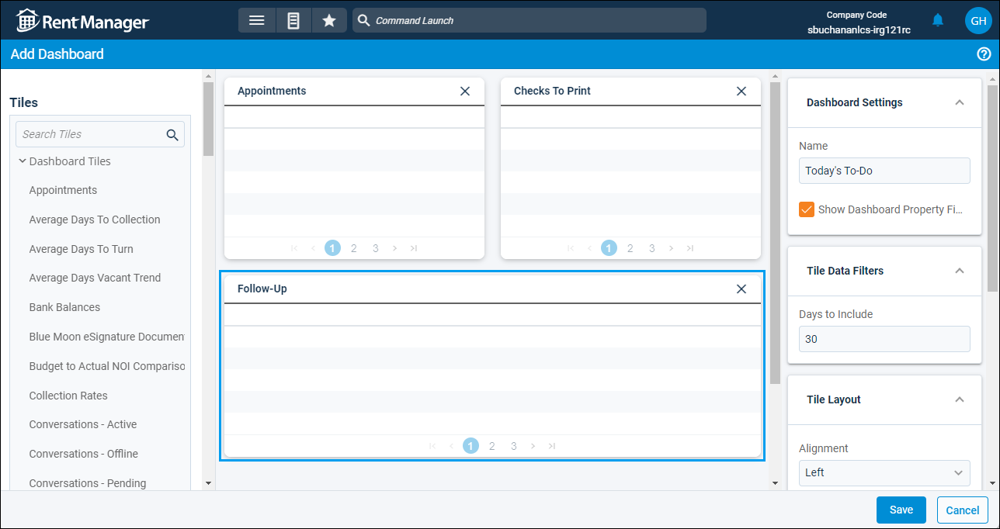

Source: https://rmxhelp.rentmanager.com/Topics/Express/Other/Dashboard-Add.htm
Add a Dashboard
Dashboards are fully customizable pages that display tiles of information related to your Rent Manager database. There are two types of dashboards: system and personal. System dashboards allow you to manage and share dashboards with other users to provide them with the most relevant information, removing the need for them to recreate already existing dashboards. Personal dashboards are dashboards that you create or are assigned to you. You can create new dashboards (both personal and system) from scratch, use a provided template, or copy a specific user's dashboard.
Related Privileges
| Group | Privilege | Column |
|---|---|---|
| Setup | Manage system dashboards | Enabled |
| Edit own dashboards | Enabled |
For more information, refer to Control User Access.
Step 1: Create a Dashboard
To add a dashboard, go to  arrow_forward Dashboard, then click
arrow_forward Dashboard, then click  arrow_forward System Dashboards or My Dashboards to select the type of dashboard you want to create. There are three options available on both the System Dashboards page and the My Dashboards page: create a brand new blank dashboard, use a dashboard template, or copy a user's dashboard.
arrow_forward System Dashboards or My Dashboards to select the type of dashboard you want to create. There are three options available on both the System Dashboards page and the My Dashboards page: create a brand new blank dashboard, use a dashboard template, or copy a user's dashboard.
Add a Dashboard
To create a brand new dashboard, click  Add. The Add Dashboard page opens without preselected tiles. If you don't want to spend time reviewing tiles from previously created dashboards and/or you're not completely sure what tiles you need, creating a brand new dashboard might be the best approach.
Add. The Add Dashboard page opens without preselected tiles. If you don't want to spend time reviewing tiles from previously created dashboards and/or you're not completely sure what tiles you need, creating a brand new dashboard might be the best approach.
Create a Dashboard from a Template
To create a dashboard using a prebuilt template from Rent Manager, do the following:
-
On the
 Add button, click the drop-down arrow arrow_forwardAdd From Template.
Add button, click the drop-down arrow arrow_forwardAdd From Template.
The Add dashboard from template displays. -
Select a template from the drop-down list.
-
Click OK.
The Add Dashboard page displays with specific tiles already populated.
Copy User's Dashboard
You can create a dashboard using an existing user's dashboard as a template by doing the following:
-
Click
 W Copy User's Dashboard in the top right.
W Copy User's Dashboard in the top right.
The Copy User's Dashboard pop-up displays. -
In the User field, select the username from the drop-down list.
-
In the Dashboard field, select the user's dashboard to copy from the drop-down list.
-
In the Save As field, enter a name for the new dashboard.
-
Click Save.
The user dashboard is copied as either a system or personal dashboard.
Step 2: Design the Dashboard
Once the dashboard is created, the Add Dashboard page displays and you can customize it with a variety of tiles.

To add tiles and establish settings, do the following:
-
In the Dashboard Settings section, enter a Name for the dashboard.
-
Check Show Dashboard Property Filter to allow a user to select which properties or property groups populate the dashboard tiles.
-
In the Tiles section, click the desired dashboard tile(s). Alternatively, click and hold the tile name to drag it onto the canvas.
-
Drag and drop tiles on the canvas to change the tile layout as desired.
-
Select a tile on the canvas to display that tile's settings in the Tile Data Filterssection. Most tiles have different settings allowing you to filter and customize the data to display on the tile. For example, the Average Days to Turn tile allows you to filter by property, unit status, and more.
-
In the Tile Layout section, customize how the tile visually displays on the dashboard using the fields below.
Field Description Alignment
The alignment (Left, Center, or Right) of the Caption on the selected tile.
Border
The perimeter line color of the selected dashboard tile.
Caption
The text label that displays at the top of the dashboard tile. The tile name is used by default.
Color
The color of the label background that displays at the top of the dashboard tile.
Font Color
The color of the Caption text for the selected dashboard tile.
Font Weight
The font thickness (Normal or Bold) of the Caption text.
Width
The amount of horizontal space (Fourth, Third, Half, Two Thirds, or Full) occupied by the selected tile.
-
Click Save.
The dashboard is saved. If the dashboard you created is a system dashboard, it can be assigned to other users.